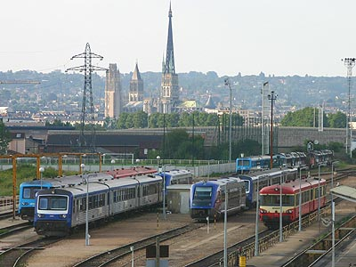

Automoteurs thermiques
Dès le 19e siècle, le Chemin de fer fut un moyen économique de désenclaver les provinces. Mais les tacots à vapeur restaient lents et devenaient coûteux tant en charbon qu'en entretien. Après d'improbables automoteurs à vapeur puis à essence, c'est le moteur "à huile lourde", c'est à dire le moteur Diesel à combustion interne, qui s'imposa dès les années 30 avec les autorails Renault des séries VH.
Durant l'entre-deux guerres, les constructeurs déclinaient une vaste panoplie d'engins pour répondre aux souhaits des grands réseaux. Ainsi, la SNCF se trouva en 1938 à la tête d'un parc hétérogène constitué d'un grand nombre de séries différentes qui ne comptaient pour la plupart d'entre elles qu'une poignée de véhicules.
Aussi, dès les années 40, la SNCF entreprit une grande mutation en lançant les programmes d'autorails unifiés. Ils visaient à abaisser les coûts de conception et d'entretien. Cette époque correspond également à la démocratisation de la voiture individuelle, le recentrement du Chemin de fer sur les axes de circulation principaux et la fermeture progressive des lignes secondaires. Dans ce contexte, le SNCF poursuivit et développa aussi la construction d'éléments automoteurs disposant de plusieurs caisses et s'affranchissant des manoeuvres complexes d'une remorque. Dans les années 60, du fait de leur autonomie, les automoteurs thermiques furent les premiers matériels choisis pour assurer les Trans Europ Express et une nouvelle technologie, la turbine à gaz, faisaient son apparition et laissait espérer des trains à grande vitesse alimentés en Diesel. Cependant, les chocs pétroliers cantonneront les autorails aux services régionnaux.
Après de nombreux travaux d'électrification, le parc automoteur avait marqué une pause durant les années 80 et 90. La prise de contrôle des services de transports régionnaux par les Régions a déclenché une nouvelle mutation au sein des autorails français. L'arrivée de nouveaux matériels plus silencieux, confortables, rapides et moins polluants vise à pousser les matériels plus anciens à la retraite, augmenter les fréquences et rattrapper le confort proposé par les autocars modernes. Pourtant, le relais a pris plus de temps que prévu. La fiabilisation des nouveaux matériels est délicate et les engins unifiés quincagénaires quittent à peine la scène.
Les Autorails des grands réseaux
VH
Les Autorails SNCF Unifiés de première génération
X 2400 - U600
X 2700 RGP
X 2800 - U825
X 3800 Picasso - U300
X 4200 Panoramiques
Les Autorails SNCF Unifiés de seconde génération
Les Caravelles
X 4300-X 4500
X 4630
X 4750-X 4790-XP 94750
X 4900
X 2100
X 2200
Les Autorails de nouvelle génération
X 72500 XTER
X 73500-X 73900 ATER
X 76500 AGC
Les Autorails à écartement métrique
X 74500

Parc thermique de Sotteville devant la cathédrale de Rouen (02/08/2005)